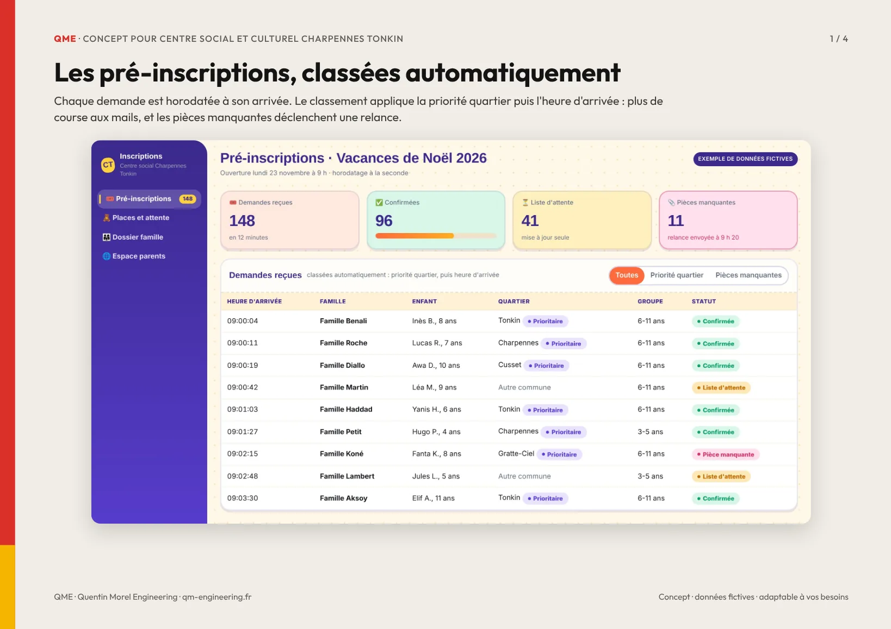
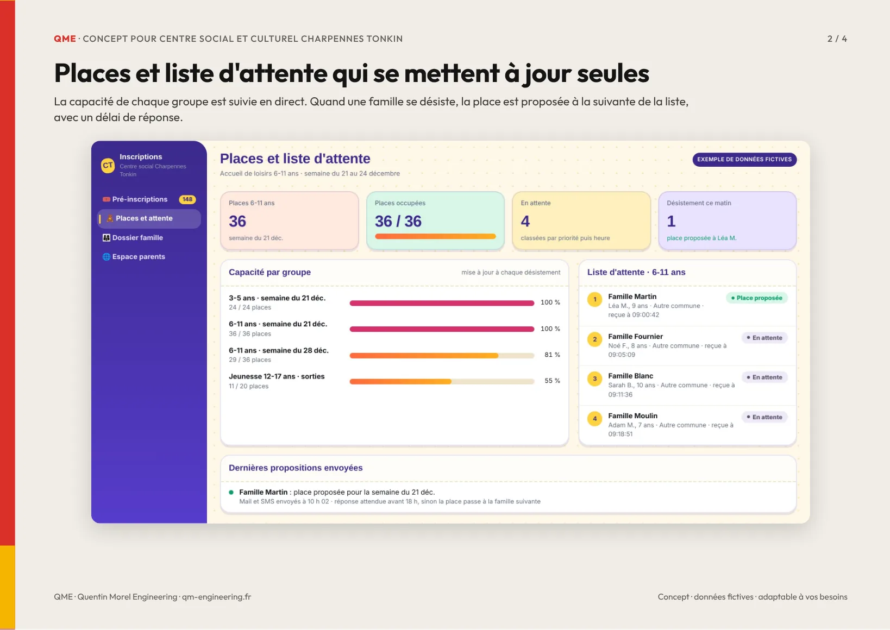
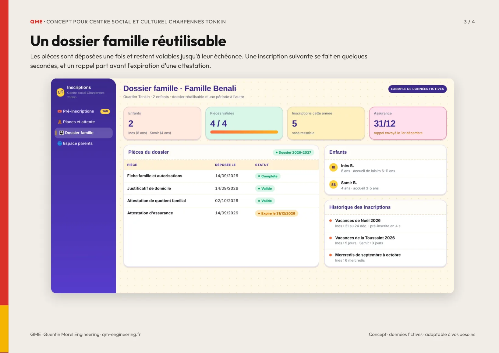
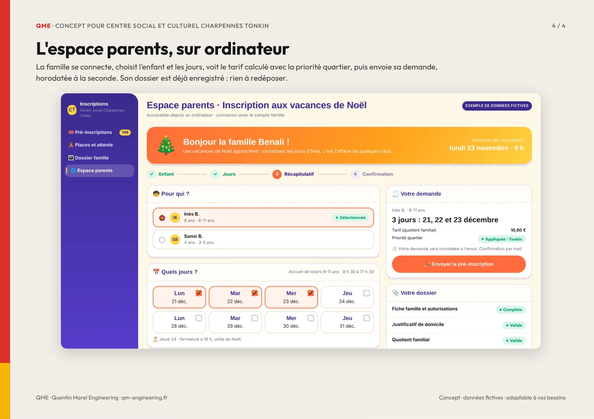

Concept pour Centre social et culturel Charpennes Tonkin
Une plateforme de pré-inscription pensée pour vos accueils de loisirs : une demande horodatée à la seconde, la priorité quartier appliquée automatiquement, une liste d'attente qui se met à jour seule et un dossier famille réutilisable d'une période à l'autre. Toutes les données sont fictives. Tout peut être adapté à votre façon de travailler et construit par modules.



